Blue & Green Waterways
A new 3D landscape built around the reference's blue-green mountain palette, olive lake and long timber bridge. Its architecture, terrain and water are modeled separately and share the same surface-attached ink treatment.
Azurite blue
Malachite green
Jade shallows
Olive lake
Ochre silk
Umber timber
Reference and interpretation
The source sets the wide composition, color hierarchy and bridge destination. Blue pigment gathers irregularly around crests and shadowed shoulders; pale green and warm earth interrupt the faces below. Farther shores and the tall spires at the right lose saturation into the ochre haze.

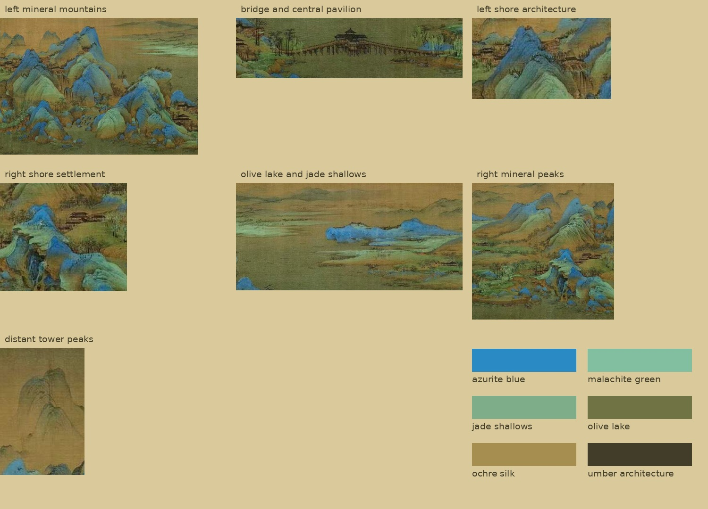
Mountain shape first
Revision 6 replaces repeated hill profiles with individually traced crests, sloping shoulders, and distinct foreground hills. The palette is held at revision 5. Inspect the neutral clay shape comparison.
Color rendered as ink
Surface-attached tonal brush maps, painted shadow bands and colored glazes now accompany darker foliage, mountain trees and grassy ledges. Read the research and compare wash off/on.
Detail refinement
The pavilion now sits on the highest level crown of a visibly rising bridge. The crossing is narrower and the two approaches have unequal lengths, as in the source. Its floor meets the deck, and the roof wings, porches and support rows are mirrored. Roads continue into wooded banks. Darker segmented rock folds, overlapping mineral gradients and moving far-lake mist bring more of the source’s visual rhythm into the 3D scene.
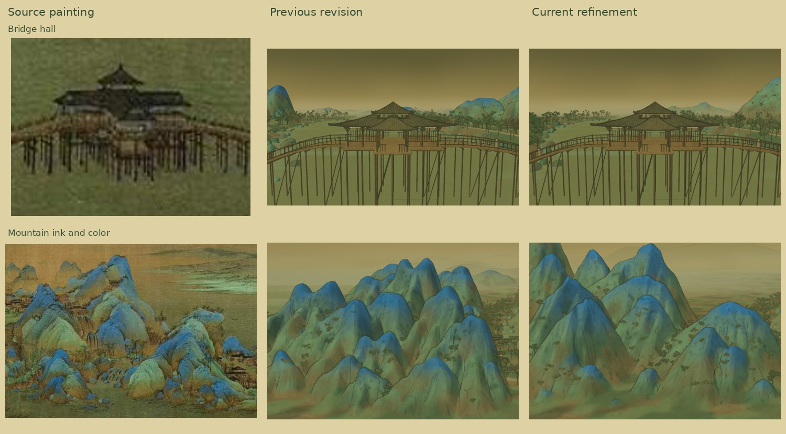
Same camera, previous and current

The bridge and shore buildings
The long bridge has individual planks, handrails, narrow balusters, paired timber pilings, cross joists and diagonal braces. The central hall has been rebuilt around the source’s cruciform silhouette: broad low roof wings, a compact attached central cap, projecting porches, pale friezes and lattice screens. The hall is seated on the bridge’s highest level crown, with its floor flush to the deck. Its widened floor has its own mirrored foundation rows. Bridge rails stop at the entrances, leaving the interior open. Roofs have real thickness, curved eaves, hip ridges and individual tile rolls.
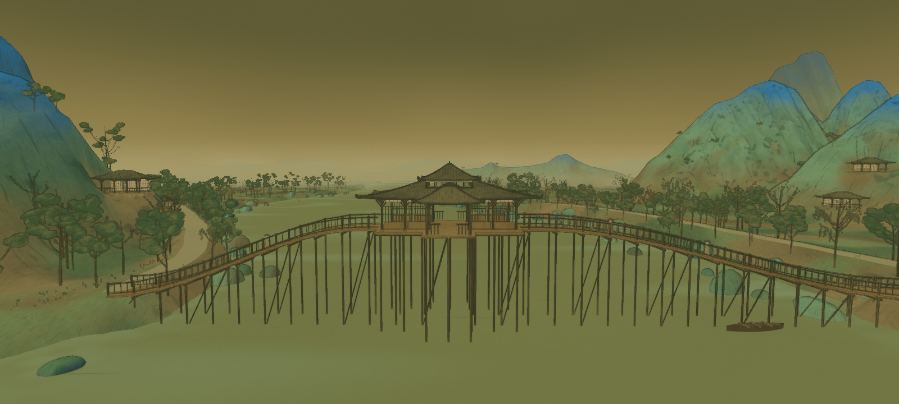
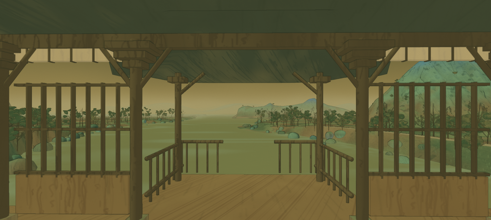
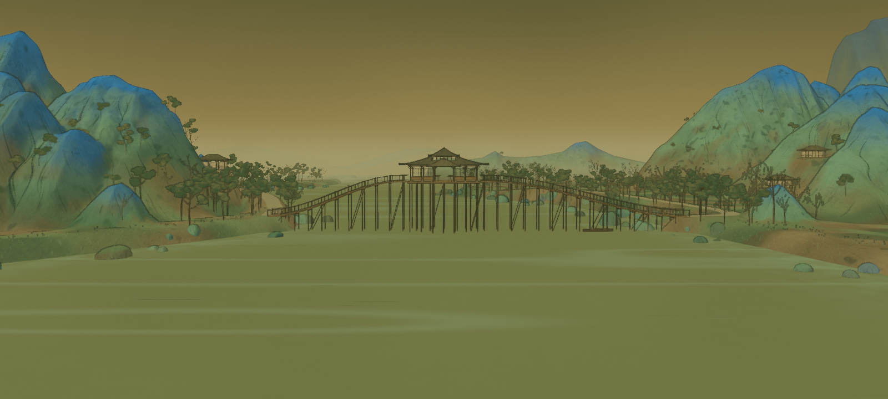
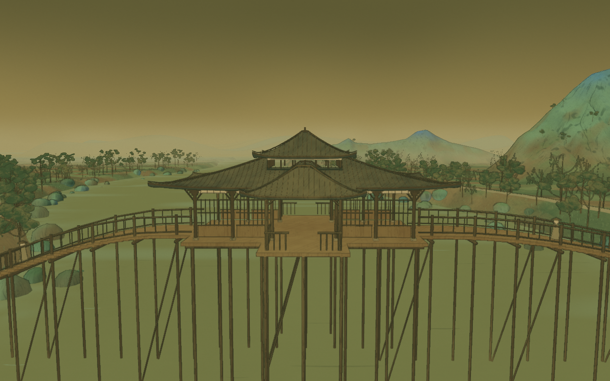
Roads through the banks
Both bridge ends meet graded roads that curve into the landscape. Trees line the verges, keeping their trunks outside the walking surface while their crowns partly cover the approaches. The road meshes are included in the shore architecture model.
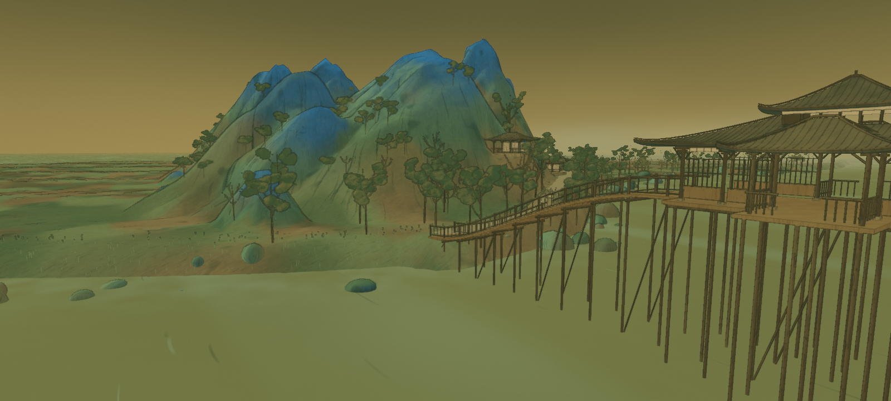
Mineral mountains and olive water
The connected terrain forms both banks, overlapping mountain masses and the long low island in the lake. Broad weathered crowns, shallow saddles and asymmetric side knuckles replace the repeated needle-like summits. Shore terraces blend into the natural slopes. Sixty mountain and island masses use branching ridge spines, interlocking buttresses, smaller foreground hills and four receding shore layers. Broad crowns have distinct profiles and low fluting. The near hills overlap in front of the taller range. Rich blue crests, varied green faces, ochre breaks, pooled ink and darker foot washes give the gradients more depth. Pigment uses surface shape, local height and several fixed wash masks. Segmented dark fold spines, short curved contour fragments and fine dry-brush ribbons follow the surface, and the ink finish respects geometric depth and occlusion. The lake keeps a muted olive base, broken jade deposits and small moving brush strokes.
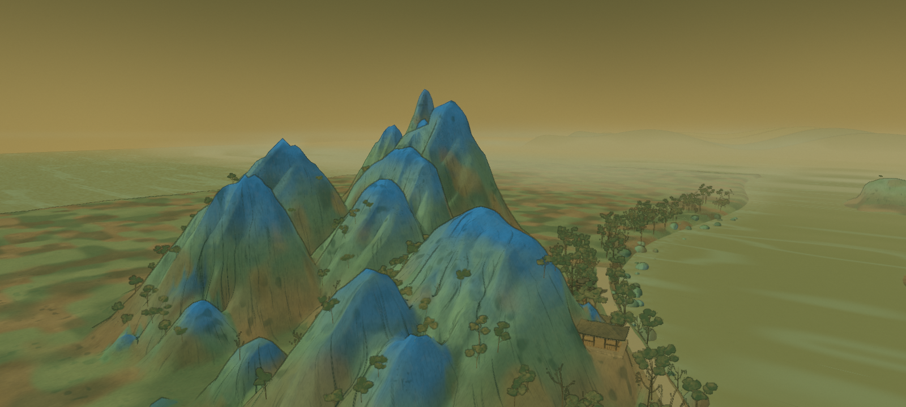
Tree structure
The groves now mix bare forked trees, airy broadleaf crowns and drooping willow sprays. Crooked trunks divide into alternating branches and smaller twigs. Small curved leaves and separated irregular deposits leave gaps that reveal the branch structure.
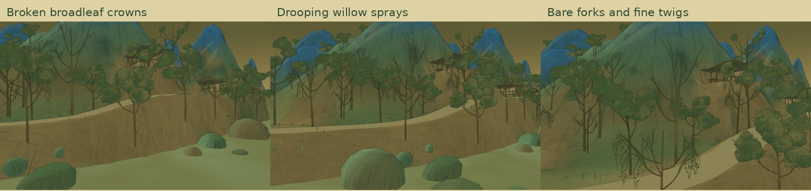
Ink during zoom and movement
Pigment is evaluated in undeformed surface coordinates. Wind bends trunks, branches and leaves after paint placement. Both the color pass and depth/normal pass share the same deformation and clock. Fine marks blend gradually with distance; the stroke patterns are never randomly reseeded per frame. Silk grain belongs to the finished display surface.
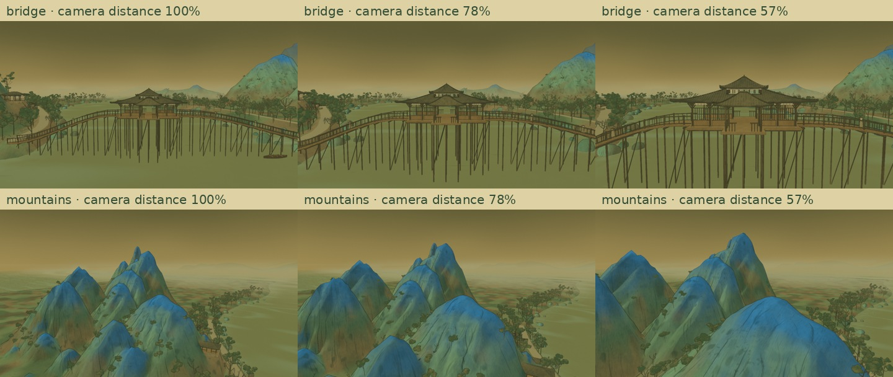
Moving mist over the far lake
Low sheets of warm olive mist drift across the lake and the feet of the distant mountains. Three height layers move in world space, so the mist stays within the landscape as the camera moves. Choose “Mist over the distant lake” in the viewer to watch it with a fixed camera.
The camera journey
Other angles and real geometry
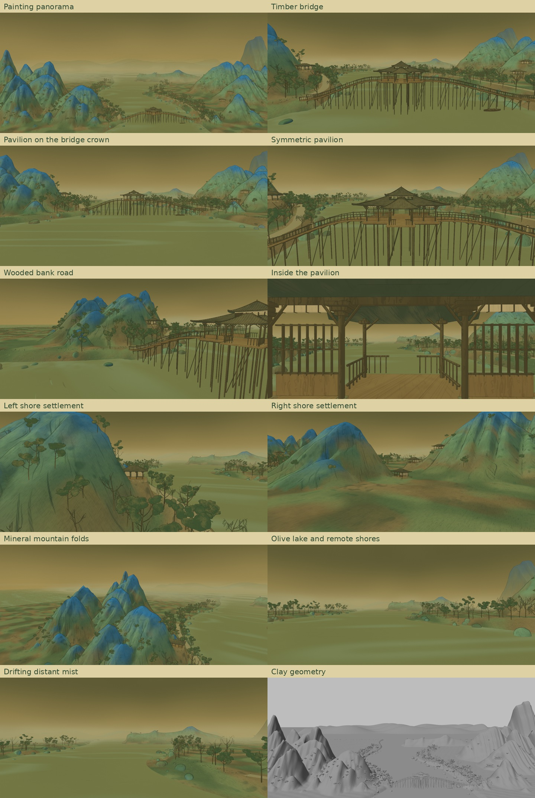
Verification and boundaries
Checks cover pavilion mirror silhouettes, floor/deck alignment, road connections, tree clearance, localized fog motion, lake-bed separation, bridge-deck ray hits, exact time replay, pigment correspondence under camera translation, finite zoom output, color controls, environment motion and camera controls. Each exported GLB is reloaded. The final movie is fully decoded, and sampled encoded frames are reviewed.
The small screenshot does not determine depth, back faces, interiors or individual leaves. This scene remains a procedural interpretation, with simplified rock masses and repeated shore architecture compared with the reference. Correspondence and replay checks do not measure exact painting-style fidelity or every possible camera angle.